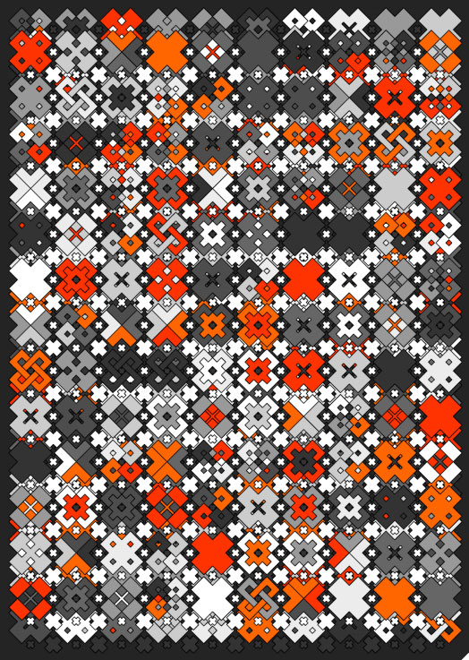
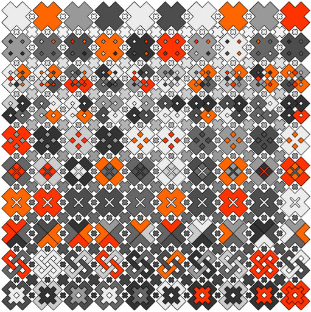

Back
Assignment 3 - Objects and Inheritance
Guidelines
Due at 11.59pm, Sunday, October 23rd.
- You are graded on the completeness, neatness, comments, and visual style of your final assignment
- All assignments are individual
- ONE SKETCH ONLY
- ZIP YOUR SKETCH FOLDER (not individual files) INTO ONE ZIP FILE
- Submit to WebCT before the deadline
There is no late policy for this course!
If you do not complete the assignment by the deadline, you will receive 0
You will be excused pending discussion with your TA
Overview:
We are going to create a grid layout of shape objects in order to create stunning patterns and effects.
Our shape objects will be interactive and react to the user input via the mouse. This will allow us to
parameterize our pattern and work with data in the context of a design constraint. Samples:


Produce one sketch only, the requirements are given in parts as a guide only
Make sure you fulfill all requirements, but feel free to deviate artistically
This is a real opportunity to create some stunning work, BE CREATIVE AND TAKE RISKS.
Aim high and keep moving!
Part 1 - A Shape Object
Create a class to define a shape of your choice.
Instantiate this shape several times and arrange in a grid.
Requirements:
- Your shape class must have fields to represent:
- Position
- Rotation / Orientation
- Size / Scale
- Color
- Your shape class must also have the following:
- A constructor with no parameters that initializes the shape fields with random values
- A constructor with two parameters to initialize the position fields of the shape
- A draw method that uses a combination of simple and complex shapes
- In your main sketch (setup, draw):
- A datatype to store your shape instances
- Initialize all the shape objects
- Call the draw method of all the shape objects
Part 2 - Reactive Shapes
You will now make a subclass of your shape class from Part 1.
Add methods to allow the new objects to react to user input.
Requirements:
- Your new class must have the following methods:
- (choose three, or make your own)
- Effect the color (gradient) based on distance to the mouse
- Effect the size based on distance to the mouse
- Effect the shape based on distance to the mouse
- Effect the rotation based on the angle to mouse
- Effect the size based on the angle to mouse
- Effect the color (gradient) based on the angle to mouse
- Effect the shape based on the angle to mouse
*** For distance based interaction it can be distance to mouseX, mouseY, or both
- In your main sketch (setup, draw):
- Add these new shapes to your datatype from Part 1
- Call their reactive methods and test them
Part 3 - Different Shapes
You will now create a new subclass of your class from Part 2.
This class will override the draw method that was inherited from the original class from Part 1.
Requirements:
- Your overridden draw method must do the following:
- Use a combination of simple and complex shapes
- Be distinct but harmonious with your shape design from Part 1
- In your main sketch (setup, draw):
- Store in your datatype a random or static pattern of the reactive shapes from Part 2 and Part 3
- You should now have a grid layout composed of two types of reactive shapes
- Select a key for saving images of your sketch
(use the variable frameCount in the file name) so you don't overwrite previous saved images
Tips and Tricks
- Code a SINGLE item (maybe even a single line) then TEST TEST TEST
- Review Objects, Methods, Arrays
- Style counts! We want to see some amazing designs!
- Start soon!